얼레벌레 빵집 알바 탐구생활
0. 너 빵집에서 일하는구나!
빵 좋아해?
그래도 빵 많이 먹을 수 있지 않아?
대답은 완전 NO다.
일단 나는 빵을 그리 좋아하지 않는다. 또한 1년 넘게 현재까지 빵집 알바를 하면서 빵을 많이 먹지도 않았다. 이따끔씩 점장님이 퇴근 전 챙겨주시는 빵들은 알뜰히 챙겨 모두 가족에게 주었으며, 대부분 빵을 유독 좋아하시는 아빠의 몫이 되었다. 그래, 어쩌다보니 본격 빵 속성 효녀가 된 것이다! 자꾸 빵빵빵 거리게 되는데 신발 ‘빵’구날 것 같이 바쁘다는 건 덤…
각설하여 그렇다면 왜 아르바이트로 빵집을 골랐어?라고 누군가가 묻는다면 그냥 “빵 냄새는 어릴 때부터 참 좋아했거든요”하고 대답할 수 있다. 어린 시절 엄마가 집 앞 마트 심부름을 시키면 괜히 떼 한번 써보는 금쪽이었으나, 유독 식빵 가게 심부름을 시키면 기분이 그렇게 좋았다. 절대로 마트보다 더 가까워서가 아니다. 마트와 식빵 가게는 바로 옆옆 블록에 있었음에도, 말랑말랑한 식빵이 가게 바깥에서부터 풍겨오는 향이 좋았다. 어쩌면 중학교 때 국어 시간에 배운 공감각적 심상이 딱 맞을 지도 모른다. 노릇노릇한 향, 퐁실퐁실 향… 그렇게 사온 식빵을 한입 베어물면 아, 맛이 없는 건 아닌데 분명 식빵이 꼬슬꼬슬 맛있는데 뭔가 아쉽다! 빵을 좋아하는 이라면 앞선 나의 말들에 이의를 표할 수 있겠지만 이처럼 나에게 빵은 맛보단 훨씬 '향'으로 다가오는 음식이었다. 그니까 바쁘게 알바하면서 빵 냄새라도 맡으면 조금 낫지 않을까? 하는 마음으로 알바를 시작하게 된 것이다. 거친 세상에 뛰어든 건 나니까 암 낫 오케이!
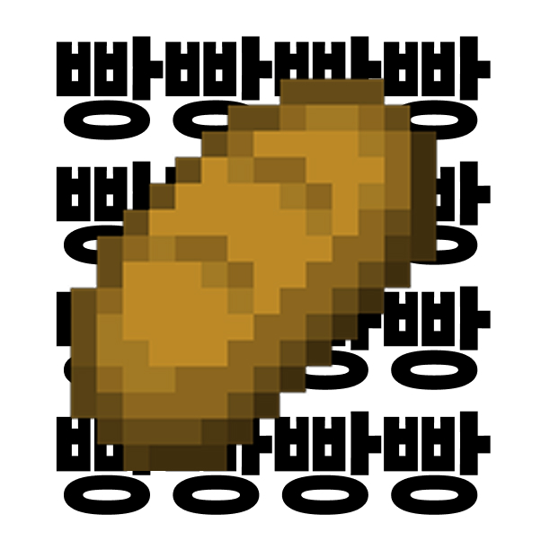
1. 해피포인트 있으세요?
아뇨 해피하지 않아서요…
우리는 해피라는 말을 하루동안 얼마나 내뱉을까? 인생회피 말고 인생해피 말이다. 빵을 계산하기 전 해피 포인트 있으세요? 통신사 적립은요?가 코딩처럼 내 머릿속에 자동적으로 입력되어 있다. 때문에 이제는 아무런 감정 없이 내뱉을 수 있다는 것인데… 때는 평화롭게 알바를 시작한 지 3개월 쯤, “해피포인트 있으세요? 아뇨 해피하지 않아서요…”라는 밈이 유행한 것이다! 두 유 해브 해피포인트?는 어이없게도 내가 내뱉어야 말이었고 내가 빵집에서 일하고 있는 걸 알고 있는 주변 친구들이 나에게 이 밈을 쓰기 시작했다. 덕분에 무표정으로 알바를 하는 와중에도 자꾸 머릿속에 새로운 해피 바이러스가 스며들어 오게 된 것이다.. 손님에게 두 유 해브 해피 포인트?(실제로는 한국말이다.) 를 물을 때마다 주마등처럼 아뇨 행복하지 않아서요가 머릿속에서 상호작용된다. 알바생의 심경 고백… 물론 마음 속이다. 언 해피 밈 바이러스 덕분에 아무도 모르게 웃음을 참아냈다. 낫 해피 포인트 벗 아임 해피!
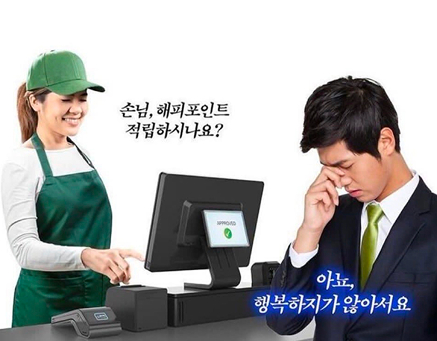
2. 철갑갑옷 케이크 포장하기
생일 날, 기념날, 그냥 기분 좋은 날 케이크는 그런 특별한 기분을 내고 싶을 때 먹는다. 오밀조밀 예쁘게 장식이 올라간 케이크는 철갑갑옷 박스를 입고 있다는 걸 알바를 하면서도 알게 되다니? 이게 무슨 말이냐, 케이크 박스가 그렇게 두꺼운지 또 날카로운지 알바를 하기 전까지는 새삼 몰랐다. 손님들이 막 몰려 케이크를 기계처럼 포장하다가 베이는 일은 비일비재, 피가 철철 나고 있지만 케이크 포장을 멈출 수 없으니 대충 테이프로 손가락을 감는 희생정신은 기본. 역시 케이크는 꺼내서 먹을 때가 가장 아름다운 법이다.

3. 촛불은 몇 개 드릴까요?
그런 말이 있다. 어른이 될수록 자신의 나이를 까먹어 몇 년생이라고 이야기하게 된다고. 79년생, 86년생, 91년생 … 평소 생각해보지 않은 년도를 들으면 바로 나이가 떠올릴 수 있을까? 나 같은 경우는 아니다. 덕분에 촛불 몇 개 드릴까요? 라는 물음에는 고도의 계산이 필요할 수 있다. 간혹 토끼띠! 소띠!라고 이야기하시는 분들도 있다는 건 안 비밀.
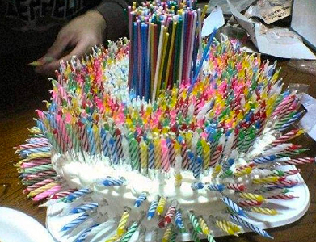
4. 바게트 근접 주의!
빵집 가게 문 앞엔 빵을 담을 수 있도록 식판과 집게들이 배치되어 있다. 그렇지만 역시 예외는 있는 법.
주로 아저씨 손님 분들이 바게트를 그대로 손으로 집어 내 눈 앞까지 들이 밀어 가져오신다. 어어 손님 그거를 손으로 만지시면… 당황도 잠시 비닐장갑을 재빠르게 손에 끼워 바게트 잘라드릴까요?를 묻는 게 나름의(?) 프로페셔널이다.
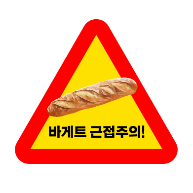
5. 손님, 빵을 두고 가셨어요!
정육점에 가면 고기, 채소집에 가면 채소. 그렇다면 빵집에 왔다면? 빵을 사러 온 것이다. 그런데 생각보다 빵을 놓고 가시는 손님분들이 꽤 있다! 장발장은 빵을 훔쳤지만, 손님들은 빵을 사러 와서… 그대로 두고 간다. 계산까지 다 하신 상태로 휑 빵을 두고 가시면 뒤늦게 부랴 부랴 따라 나간 적이 몇 번이나 있다. “손님, 빵 두고 가셨어요!” 하고 외치니 손님의 머쓱한 웃음이 기억에 남는다.
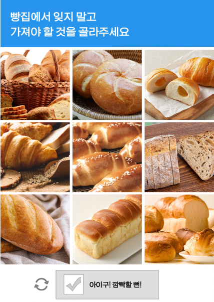
6. 지져스 크라이스트!
크리스마스는 카톨릭과 기독교에서 예수의 탄생일이다. 하지만 정작 생일 주인공은 어디에도 없고, 사람들은 다들 케이크를 사러 빵집을 찾아온다.
크리스마스 케이크 예약하셨나요?
촛불 몇 개 드릴까요?
폭죽도 드릴까요?
를 반복하고 있다보면 크리스마스가 훌쩍 지나가 있었다.
다들 크리스마스에는 케이크 말고 다른 걸 먹어보는 건 어떨까?
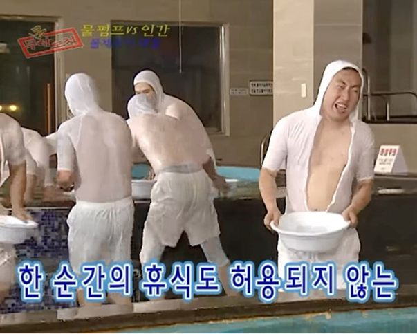
0. 너 빵집에서 일하는구나!
빵 좋아해? 그래도 빵 많이 먹을 수 있지 않아? 대답은 완전 NO다. 일단 나는 빵을 그리 좋아하지 않는다. 또한 1년 넘게 현재까지 빵집 알바를 하면서 빵을 많이 먹지도 않았다. 이따끔씩 점장님이 퇴근 전 챙겨주시는 빵들은 알뜰히 챙겨 모두 가족에게 주었으며, 대부분 빵을 유독 좋아하시는 아빠의 몫이 되었다. 그래, 어쩌다보니 본격 빵 속성 효녀가 된 것이다! 자꾸 빵빵빵 거리게 되는데 신발 ‘빵’구날 것 같이 바쁘다는 건 덤… 각설하여 그렇다면 왜 아르바이트로 빵집을 골랐어?라고 누군가가 묻는다면 그냥 “빵 냄새는 어릴 때부터 참 좋아했거든요”하고 대답할 수 있다. 어린 시절 엄마가 집 앞 마트 심부름을 시키면 괜히 떼 한번 써보는 금쪽이었으나, 유독 식빵 가게 심부름을 시키면 기분이 그렇게 좋았다. 절대로 마트보다 더 가까워서가 아니다. 마트와 식빵 가게는 바로 옆옆 블록에 있었음에도, 말랑말랑한 식빵이 가게 바깥에서부터 풍겨오는 향이 좋았다. 어쩌면 중학교 때 국어 시간에 배운 공감각적 심상이 딱 맞을 지도 모른다. 노릇노릇한 향, 퐁실퐁실 향… 그렇게 사온 식빵을 한입 베어물면 아, 맛이 없는 건 아닌데 분명 식빵이 꼬슬꼬슬 맛있는데 뭔가 아쉽다! 빵을 좋아하는 이라면 앞선 나의 말들에 이의를 표할 수 있겠지만 이처럼 나에게 빵은 맛보단 훨씬 '향'으로 다가오는 음식이었다. 그니까 바쁘게 알바하면서 빵 냄새라도 맡으면 조금 낫지 않을까? 하는 마음으로 알바를 시작하게 된 것이다. 거친 세상에 뛰어든 건 나니까 암 낫 오케이!
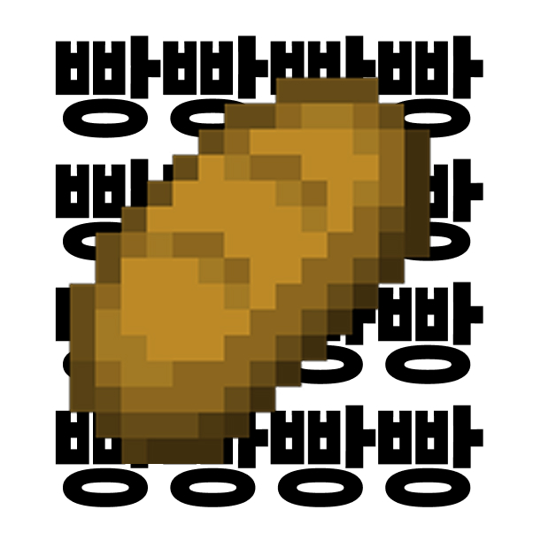1. 해피포인트 있으세요?
아뇨 해피하지 않아서요…
우리는 해피라는 말을 하루동안 얼마나 내뱉을까? 인생회피 말고 인생해피 말이다. 빵을 계산하기 전 해피 포인트 있으세요? 통신사 적립은요?가 코딩처럼 내 머릿속에 자동적으로 입력되어 있다. 때문에 이제는 아무런 감정 없이 내뱉을 수 있다는 것인데… 때는 평화롭게 알바를 시작한 지 3개월 쯤, “해피포인트 있으세요? 아뇨 해피하지 않아서요…”라는 밈이 유행한 것이다! 두 유 해브 해피포인트?는 어이없게도 내가 내뱉어야 말이었고 내가 빵집에서 일하고 있는 걸 알고 있는 주변 친구들이 나에게 이 밈을 쓰기 시작했다. 덕분에 무표정으로 알바를 하는 와중에도 자꾸 머릿속에 새로운 해피 바이러스가 스며들어 오게 된 것이다.. 손님에게 두 유 해브 해피 포인트?(실제로는 한국말이다.) 를 물을 때마다 주마등처럼 아뇨 행복하지 않아서요가 머릿속에서 상호작용된다. 알바생의 심경 고백… 물론 마음 속이다. 언 해피 밈 바이러스 덕분에 아무도 모르게 웃음을 참아냈다. 낫 해피 포인트 벗 아임 해피!
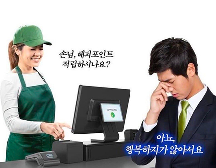2. 철갑갑옷 케이크 포장하기
생일 날, 기념날, 그냥 기분 좋은 날 케이크는 그런 특별한 기분을 내고 싶을 때 먹는다. 오밀조밀 예쁘게 장식이 올라간 케이크는 철갑갑옷 박스를 입고 있다는 걸 알바를 하면서도 알게 되다니? 이게 무슨 말이냐, 케이크 박스가 그렇게 두꺼운지 또 날카로운지 알바를 하기 전까지는 새삼 몰랐다. 손님들이 막 몰려 케이크를 기계처럼 포장하다가 베이는 일은 비일비재, 피가 철철 나고 있지만 케이크 포장을 멈출 수 없으니 대충 테이프로 손가락을 감는 희생정신은 기본. 역시 케이크는 꺼내서 먹을 때가 가장 아름다운 법이다.
3. 촛불은 몇 개 드릴까요?
그런 말이 있다. 어른이 될수록 자신의 나이를 까먹어 몇 년생이라고 이야기하게 된다고. 79년생, 86년생, 91년생 … 평소 생각해보지 않은 년도를 들으면 바로 나이가 떠올릴 수 있을까? 나 같은 경우는 아니다. 덕분에 촛불 몇 개 드릴까요? 라는 물음에는 고도의 계산이 필요할 수 있다. 간혹 토끼띠! 소띠!라고 이야기하시는 분들도 있다는 건 안 비밀.
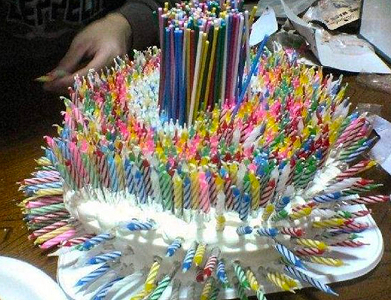4. 바게트 근접 주의!
빵집 가게 문 앞엔 빵을 담을 수 있도록 식판과 집게들이 배치되어 있다. 그렇지만 역시 예외는 있는 법. 주로 아저씨 손님 분들이 바게트를 그대로 손으로 집어 내 눈 앞까지 들이 밀어 가져오신다. 어어 손님 그거를 손으로 만지시면… 당황도 잠시 비닐장갑을 재빠르게 손에 끼워 바게트 잘라드릴까요?를 묻는 게 나름의(?) 프로페셔널이다.
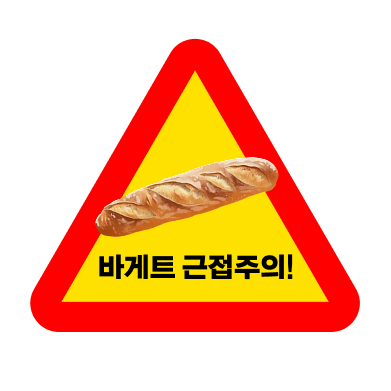5. 손님, 빵을 두고 가셨어요!
정육점에 가면 고기, 채소집에 가면 채소. 그렇다면 빵집에 왔다면? 빵을 사러 온 것이다. 그런데 생각보다 빵을 놓고 가시는 손님분들이 꽤 있다! 장발장은 빵을 훔쳤지만, 손님들은 빵을 사러 와서… 그대로 두고 간다. 계산까지 다 하신 상태로 휑 빵을 두고 가시면 뒤늦게 부랴 부랴 따라 나간 적이 몇 번이나 있다. “손님, 빵 두고 가셨어요!” 하고 외치니 손님의 머쓱한 웃음이 기억에 남는다.
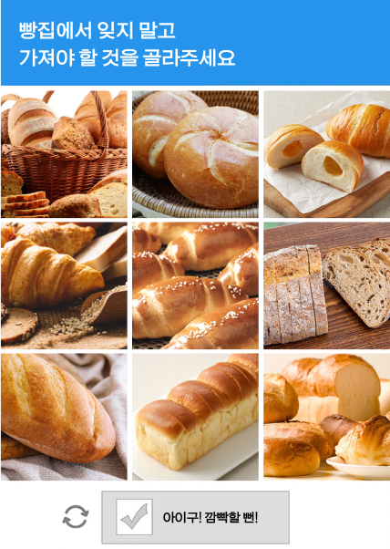6. 지져스 크라이스트!
크리스마스는 카톨릭과 기독교에서 예수의 탄생일이다. 하지만 정작 생일 주인공은 어디에도 없고, 사람들은 다들 케이크를 사러 빵집을 찾아온다. 크리스마스 케이크 예약하셨나요? 촛불 몇 개 드릴까요? 폭죽도 드릴까요? 를 반복하고 있다보면 크리스마스가 훌쩍 지나가 있었다. 다들 크리스마스에는 케이크 말고 다른 걸 먹어보는 건 어떨까?
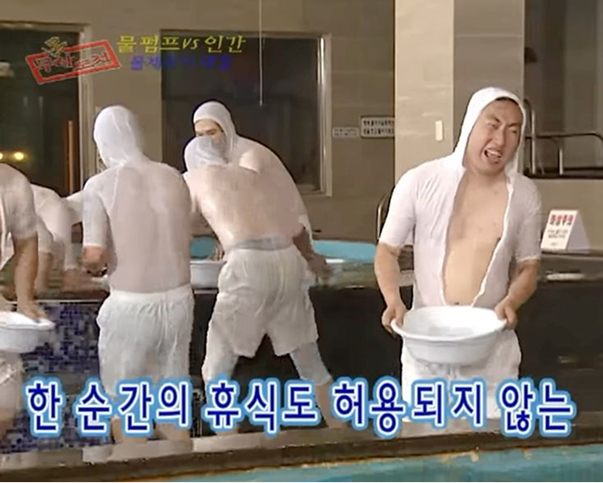